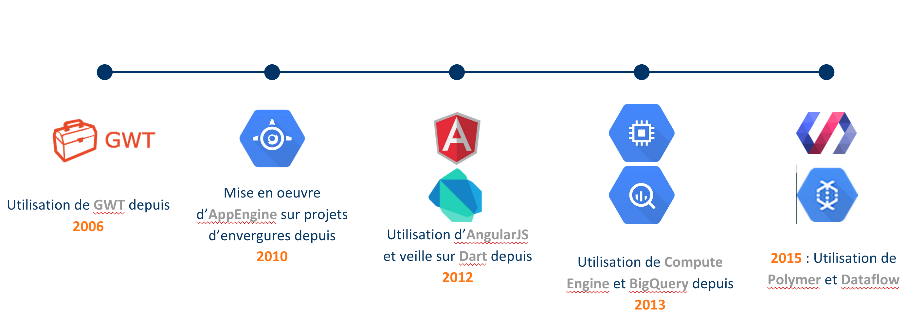
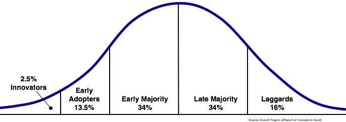
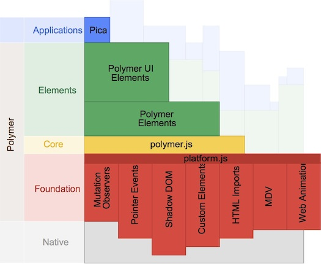

The Dart side of disruption
+NicolasFrancois / @nicofrancois
+GuillaumeGirou / @GirouGuillaume
Sfeir et Google
Avant de commencer
Pourquoi ?
- Nouveau langage pour le web
- Répond aux problématiques d'aujourd'hui
- Performance
- Moderne
Disruptif ?
Une technologie de rupture, également connue comme « rupture technologique », est une innovation technologique qui porte sur un produit ou un service et qui finit par remplacer une technologie dominante sur un marché. (Wikipedia)
Objectif de l'atelier
Etre capable de développer une application web moderne
Introduction au langage

Hello world
lang-dart void main(){
var hello = "Hello DevFest Paris";
print(hello);
}
Hello DevFest Paris
Fonction top level
lang-dart void main(){
var who = "Hello DevFest Paris";
print(sayHello(who));
}
String sayHello(String name) => "Hello $name"
Hello DevFest Paris
Ma 1ère classe
lang-dart class MaClasse {
}
lang-dart var classe = new MaClasse();
MaClasse unAutreClasse = new MaClasse();
Classe complète
lang-dart import 'dart:math';
class Point {
final int x, y;
Point(this.x, this.y);
num distanceTo(Point other) {
var dx = x - other.x;
var dy = y - other.y;
return sqrt(dx * dx + dy * dy);
}
String toString() => "($x, $y)";
}
lang-dart var p = new Point(2, 3);
print(p);// Affiche '(2, 3)'
var x = p.x;
var distance = p.distanceTo(new Point(5, 5));
Héritage
lang-dart class Person {
Person.fromJson(Map data) {
print('in Person');
}
}
lang-dart class Employee extends Person {
// Person n'a pas de constructeur par défaut
// Il faut appeler super.fromJson(data).
Employee.fromJson(Map data) : x.fromJson(data) {
print('in Employee');
}
}
List
lang-dart // Creation de listes
var vegetables = [] // == new List();
var fruits = ['apples', 'oranges'];
lang-dart // Ajout d'éléments
fruits.add('kiwis');
fruits.addAll(['grapes', 'bananas']);
assert(fruits.length == 5);
lang-dart // Tri
fruits.sort();
assert(fruits[0] == 'apples');
Map
lang-dart var gifts = {
// Keys Values
'first' : 'partridge',
'second' : 'turtledoves',
'fifth' : 'golden rings'
};
lang-dart gifts['fourth'] = 'calling birds'; // Add a key-value pair
lang-dart assert(gifts['first'] == 'partridge')
assert(gifts.length == 4);
lang-dart var keys = gifts.keys;
var values = gifts.values;
Lamdba
lang-dart var teas = ['green', 'black', 'chamomile', 'earl grey'];
lang-dart // Affichage en majuscule
var loudTeas = teas.map((tea) => tea.toUpperCase());
loudTeas.forEach(print);
lang-dart // La camomille n'est pas caéfinée.
bool isDecaffeinated(String teaName) => teaName == 'chamomile';
lang-dart // Filtrage
var decaffeinatedTeas = teas.where(isDecaffeinated);
lang-dart // Construction map
var decaffeinatedTeasMap =
new Map.fromIterable(teas, value: isDecaffeinated);
Future
lang-dart Future result = costlyQuery();
// Enchainer méthodes
return result.then((value) => expensiveWork())
.then((value) => lengthyComputation())
.then((value) => print('done!'))
// Gestion erreur
.catchError((exception) => print('DOH!'))
Polymer

Vue d'ensemble
Custom Elements
lang-html<click-counter></click-counter>
lang-html<link rel="import" href="packages/polymer/polymer.html">
<element name="click-counter">
<template>
<style>
/* Css */
</style>
<-- Html -->
</template>
<-- Code Dart -->
<script src="click_counter.dart"></script>
</element>
HTML Template
lang-html<template id="monTemplate">
<div class="mon-style" >
</div>
<!-- Code html -->
</template>
lang-html<template if="{{maCondition}}">
lang-html<template repeat="{{maList}}">
Shadow DOM
lang-html<video controls src="/ma/video"></video>
lang-html<video controls="" height="300" src="/ma/video">
#shadow-root
<div>
<div>
<div>
<input type="button">
<input type="range" precision="float" max="596.48">
<div style="display: none;">0:00</div><div>9:56</div>
<input type="button">
<input type="range" precision="float" max="1" style="">
<input type="button" style="display: none;">
<input type="button" style="">
</div>
</div>
</div>
</video>
HTML Import
lang-html
<link rel="import" href="/components/click_counter.html">
Observer
lang-html<div>
{{name}}
</div>
lang-dart @observable String name;